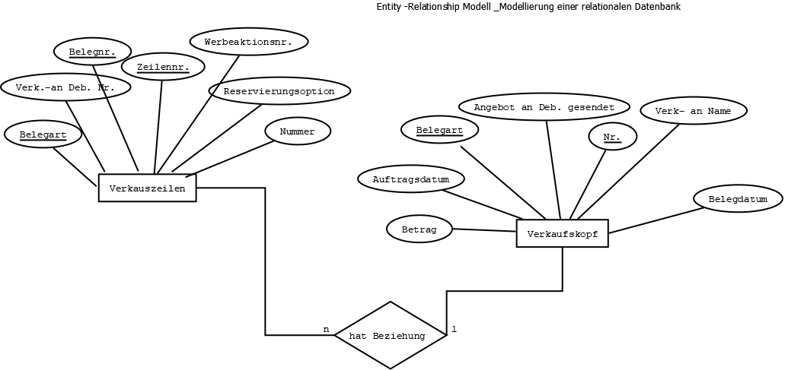
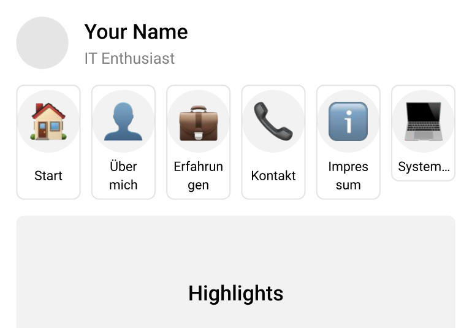

Projektbeispiel: Automatisierung eines Reservierungsprozesses
Auf dieser Seite stelle ich ein anonymisiertes Projektbeispiel aus meiner Umschulung zur Fachinformatikerin für Anwendungsentwicklung vor. Der Fokus liegt auf Prozessanalyse, technischer Dokumentation und der strukturierten Aufbereitung komplexer Inhalte.
Ziel des Projekts war es, einen bestehenden Reservierungsprozess zu analysieren, Schwachstellen sichtbar zu machen und eine nachvollziehbare Lösung zu unterstützen, die manuelle Arbeitsschritte reduziert und die Zusammenarbeit zwischen Fachbereich und IT verbessert.
Das Projektbeispiel ist anonymisiert. Vertrauliche Details, produktive Daten und vollständige Projektdokumente werden nicht veröffentlicht.
1. Projektüberblick
Manueller Reservierungsprozess
Ein bestehender Prozess enthielt manuelle Schritte, Abstimmungen und technische Abhängigkeiten zwischen Webshop und ERP-System.
Automatisierung unterstützen
Der Reservierungsprozess sollte nachvollziehbarer, weniger fehleranfällig und besser dokumentiert werden.
Analyse & Dokumentation
Im Mittelpunkt standen Prozessverständnis, Datenflüsse, technische Zusammenhänge und verständliche Projektdokumentation.
2. Systemanalyse
Die Systemanalyse betrachtet fachliche Abläufe, technische Schnittstellen, Datenflüsse und organisatorische Abhängigkeiten. Dadurch wird sichtbar, wo Probleme entstehen und welche Anforderungen daraus abgeleitet werden können.
Was erschwerte den Ablauf?
- Verzögerungen in der Bestell- und Reservierungsabwicklung.
- Fehleranfälligkeit durch manuelle Preisaktualisierung.
- Unklare Datenflüsse zwischen Webshop und ERP-System.
- Hoher Abstimmungsaufwand zwischen Fachbereich und IT.
Wie ich unterstützt habe
- Analyse bestehender Kommunikations- und Datenflüsse.
- Strukturierte Dokumentation von Prozessen und Abhängigkeiten.
- Visualisierung technischer Zusammenhänge für unterschiedliche Zielgruppen.
- Unterstützung bei der Ableitung von Optimierungsvorschlägen.
Was fachlich vorbereitet wurde
- Analyse automatisierter Reservierungslogik mit Platzhalterpreisen.
- Validierung dynamischer Preisaktualisierung.
- Abgleich der Schnittstellen zwischen Shopware, NAVconnect und Microsoft Dynamics NAV.
- Dokumentation fachlicher und technischer Zusammenhänge.
3. Technologie & Architektur
Das Projekt fand in einer bestehenden Systemlandschaft statt. Wichtig war dabei, fachliche Anforderungen und technische Rahmenbedingungen verständlich zusammenzuführen.
Microsoft Dynamics NAV
Zentrales System für Geschäftslogik, Reservierungsinformationen und prozessbezogene Daten.
C/AL
Eingesetzt im Umfeld von Microsoft Dynamics NAV zur Anpassung und Erweiterung der Logik.
Shopware & NAVconnect
Betrachtung von Datenflüssen und Schnittstellen zwischen Webshop und ERP-System.
Analyse & Testumgebung
Strukturierte Analyse, fachliche Abstimmung, Dokumentation und Prüfung in einer Testumgebung.
4. Analysevorgehen
- Bestehenden Reservierungsprozess verstehen und fachlich beschreiben.
- Beteiligte Systeme, Datenflüsse und Abhängigkeiten erfassen.
- Schwachstellen, manuelle Schritte und Fehlerquellen sichtbar machen.
- Anforderungen und Optimierungsmöglichkeiten ableiten.
- Technische und fachliche Zusammenhänge verständlich dokumentieren.
- Ergebnisse für Projektbeteiligte nachvollziehbar aufbereiten.
5. Dokumentation & Arbeitsweise
Verständlich statt nur technisch
Aus Gründen der Vertraulichkeit stelle ich auf dieser Seite keine vollständigen Projektdokumente zum Download bereit.
Stattdessen zeige ich exemplarisch, wie ich Prozesse analysiere, Informationen strukturiere und Ergebnisse verständlich dokumentiere.
Fachbereich & IT verbinden
Besonders wichtig war, technische Zusammenhänge so aufzubereiten, dass sie auch für nicht-technische Beteiligte nachvollziehbar bleiben.
Dadurch können Anforderungen klarer formuliert, Rückfragen reduziert und Entscheidungen besser vorbereitet werden.
6. Visualisierung & Diagramme
Anonymisierte Visualisierungen helfen dabei, Prozesse, Datenstrukturen und Benutzerinteraktionen verständlich darzustellen.

Benutzerinteraktionen
Darstellung typischer Interaktionen zwischen beteiligten Rollen und dem System.

Struktur & Beziehungen
Vereinfachte Sicht auf Datenobjekte, Beziehungen und technische Abhängigkeiten.

Oberflächenidee
Beispielhafte Visualisierung einer möglichen Benutzerführung oder Informationsstruktur.
7. Lessons Learned
Prozesse besser verstehen
Die Arbeit hat meine Fähigkeiten in Prozessanalyse und strukturierter Informationsaufnahme vertieft.
Fachbereich und IT verbinden
Unterschiedliche Perspektiven müssen verständlich zusammengeführt und dokumentiert werden.
Komplexität strukturieren
Systeme, Schnittstellen und Datenflüsse werden verständlicher, wenn sie sauber visualisiert werden.
Strukturierte Unterstützung
Eine gute Dokumentation erleichtert Abstimmung, Umsetzung und spätere Nachvollziehbarkeit.
8. Ausblick
Die Arbeitsprobe zeigt, wie ich komplexe Inhalte aufnehme, strukturiere und so dokumentiere, dass daraus eine nachvollziehbare Grundlage für technische oder organisatorische Verbesserungen entsteht.
Mögliche nächste Schritte
- Weiterer Ausbau automatisierter Prozessschritte.
- Stärkere Nutzung von Kennzahlen und Auswertungen.
- Noch klarere Visualisierung komplexer Zusammenhänge.
Was diese Seite zeigt
Diese Arbeitsprobe passt besonders zu Rollen in Systemanalyse, Anforderungsmanagement, technischer Dokumentation und IT-naher Projektunterstützung.